library(dplyr)
library(ggplot2)
library(dslabs)ggplot2
Keywords
R
ggplot2
The code in this lecture assumes these three libraries are loaded:
The components of a graph
In today’s lecture we recreate this:
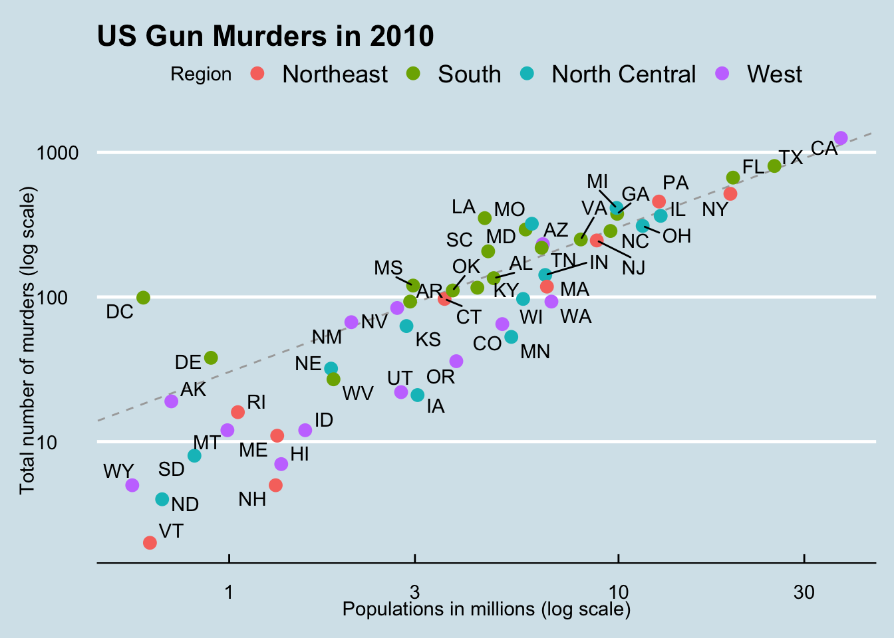
The components of a graph
gg stands for grammar of graphics.
Analogy: we learn verbs and nouns to construct sentences.
The first step in learning ggplot2 is breaking a graph apart into components.
Let’s break down the plot we want to recreate while introducing some ggplot2 terminology.
The components of a graph
- The main three components to note are:
- Data: The US murders data table is being summarized. We refer to this as the data component.
- Geometry: The plot above is a scatterplot. This is referred to as the geometry component.
- Aesthetic mapping: How we map visual cues to information provided by the dataset.
- Data: The US murders data table is being summarized. We refer to this as the data component.
Aesthetic mapping
- The two most important cues in the plot we are recreating are the point positions on the x-axis and y-axis.
- Each point represents a different observation, and we map data about these observations to visual cues like x- and y-scale.
- Color is another visual cue that we map to region.
- How we define the mapping depends on what geometry we are using.
The components of a graph
- We also note that:
- The points are labeled with the state abbreviations.
- The range of the x-axis and y-axis appears to be defined by the range of the data.
- Axes are in the log-scales.
- There are labels, a title, a legend, and we use the style of The Economist magazine.
- We will now construct the plot, piece by piece.
ggplot objects
- Start by defining the dataset:
ggplot(data = murders)- We can also use the pipe:
murders |> ggplot()- We call also assign the output to a variable
p <- ggplot(data = murders)
class(p)[1] "gg" "ggplot"ggplot objects
To see the plot we can print it:
print(p) 
Geometries
We create graphs by adding layers.
Layers define geometries, compute summary statistics, define what scales to use, or even change styles.
To add layers, we use the symbol
+.In general, a line of code will look like this:
DATA |> ggplot() + LAYER 1 + LAYER 2 + ... + LAYER N- Usually, the first added layer defines the geometry.
Geometries
So if we want to make a scatterplot, what geometry do we use?
Let’s look at the cheat sheet: https://rstudio.github.io/cheatsheets/data-visualization.pdf
Aesthetic mappings
To make a scatter plot we use
geom_points.The help file tells us this is how we use it:
murders |> ggplot() + geom_point(aes(x = population/10^6, y = total))
Aesthetic mappings
- Since we defined
pearlier, we can add a layer like this:
p + geom_point(aes(population/10^6, total))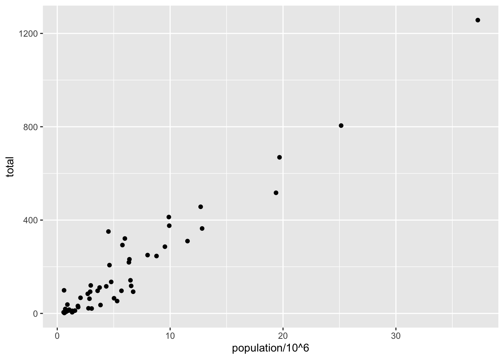
- Note we are no longer using
x=andy =.
Layers
- To add text we use
geom_text:

Layers
- As an example of the unique behavior of
aesnote that this call:
p_test <- p + geom_text(aes(population/10^6, total, label = abb))is fine, whereas this call:
p_test <- p + geom_text(aes(population/10^6, total), label = abb) will give you an error since abb is not found because it is outside of the aes function.
- The layer
geom_textdoes not know where to findabb: it’s a column name and not a global variable.
Tinkering with arguments
p + geom_point(aes(population/10^6, total), size = 3) +
geom_text(aes(population/10^6, total, label = abb))
sizecan be an aesthetic mapping, but here it is not, so all points get bigger.
Tinkering with arguments
p + geom_point(aes(population/10^6, total), size = 3) +
geom_text(aes(population/10^6, total, label = abb), nudge_x = 1.5)
nudge_xis not an aesthetic mapping.
Global versus local mappings
- Note that in we can define a global
aesin theggplotfunction:
args(ggplot)function (data = NULL, mapping = aes(), ..., environment = parent.frame())
NULL- We refer to this as the global mapping.
Global versus local mappings
- All the layers will assume the global mapping unless we explicitly define another one.
p <- murders |> ggplot(aes(population/10^6, total, label = abb))
p + geom_point(size = 3) + geom_text(nudge_x = 1.5)
- The two layers use the global mapping.
Global versus local mappings
- We can override the global
aesby defining one in the geometry functions:
Warning in geom_text(aes(x = 10, y = 800, label = "Hello there!")): All aesthetics have length 1, but the data has 51 rows.
ℹ Please consider using `annotate()` or provide this layer with data containing
a single row.
Scales
- Layers can define transformations:
p + geom_point(size = 3) +
geom_text(nudge_x = 0.05) +
scale_x_continuous(trans = "log10") +
scale_y_continuous(trans = "log10") 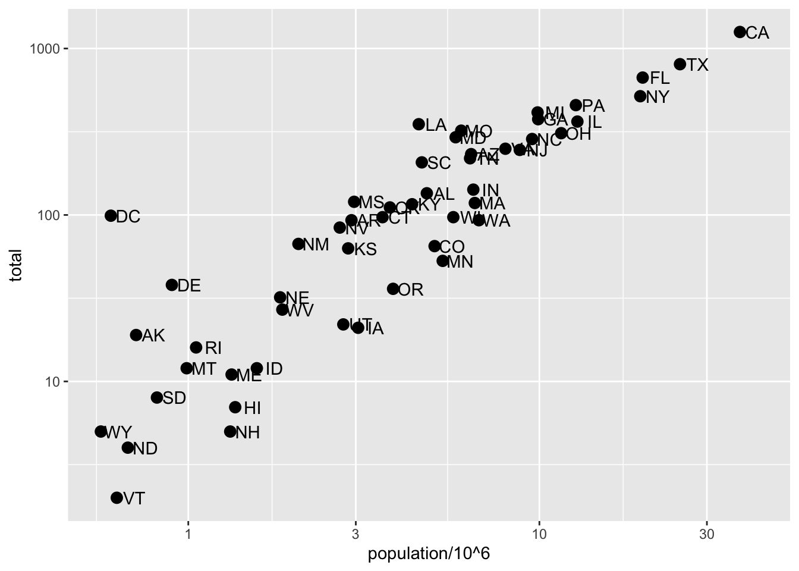
Scales
- This particular transformation is so common that ggplot2 provides the specialized functions:
Labels and titles
- There are layers for adding labels and titles:
p + geom_point(size = 3) +
geom_text(nudge_x = 0.05) +
scale_x_log10() +
scale_y_log10() +
xlab("Populations in millions (log scale)") +
ylab("Total number of murders (log scale)") +
ggtitle("US Gun Murders in 2010")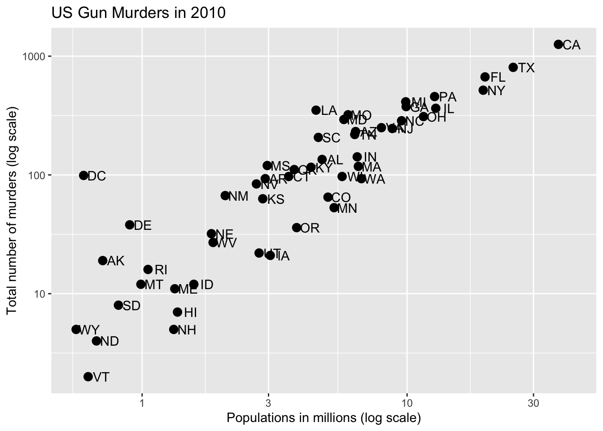
Labels and titles
- We can also use the
labsfunction:
- This produces the same graph as in the previous slide.
Almost there
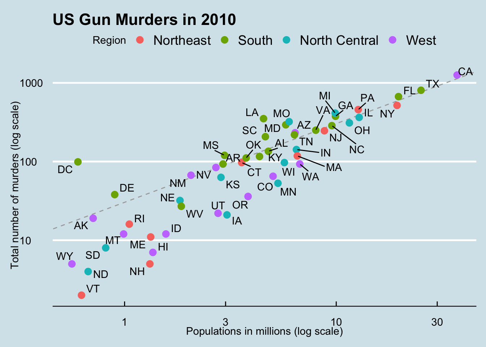
p + geom_point(size = 3) +
geom_text(nudge_x = 0.05) +
scale_x_log10() +
scale_y_log10() +
labs(x = "Populations in millions (log scale)",
y = "Total number of murders (log scale)",
title = "US Gun Murders in 2010")Adding color
murders |> ggplot(aes(population/10^6, total, label = abb)) +
geom_text(nudge_x = 0.05) +
scale_x_log10() +
scale_y_log10() +
labs(x = "Populations in millions (log scale)",
y = "Total number of murders (log scale)",
title = "US Gun Murders in 2010") +
geom_point(size = 3, color = "blue")
A mapped color
murders |> ggplot(aes(population/10^6, total, label = abb)) +
geom_text(nudge_x = 0.05) +
scale_x_log10() +
scale_y_log10() +
labs(x = "Populations in millions (log scale)",
y = "Total number of murders (log scale)",
title = "US Gun Murders in 2010") +
geom_point(aes(col = region), size = 3)A legend is added automatically!
Change legend name
murders |> ggplot(aes(population/10^6, total, label = abb)) +
geom_text(nudge_x = 0.05) +
scale_x_log10() +
scale_y_log10() +
labs(x = "Populations in millions (log scale)",
y = "Total number of murders (log scale)",
title = "US Gun Murders in 2010",
color = "Region") +
geom_point(aes(col = region), size = 3)Other adjustments
We want to add a line with intercept the US rate.
Lets compute that
r <- murders |>
summarize(rate = sum(total) / sum(population) * 10^6) |>
pull(rate)Add a line
murders |> ggplot(aes(population/10^6, total, label = abb)) +
geom_text(nudge_x = 0.05) +
scale_x_log10() +
scale_y_log10() +
labs(x = "Populations in millions (log scale)",
y = "Total number of murders (log scale)",
title = "US Gun Murders in 2010",
color = "Region") +
geom_point(aes(col = region), size = 3) +
geom_abline(intercept = log10(r), lty = 2, color = "darkgrey")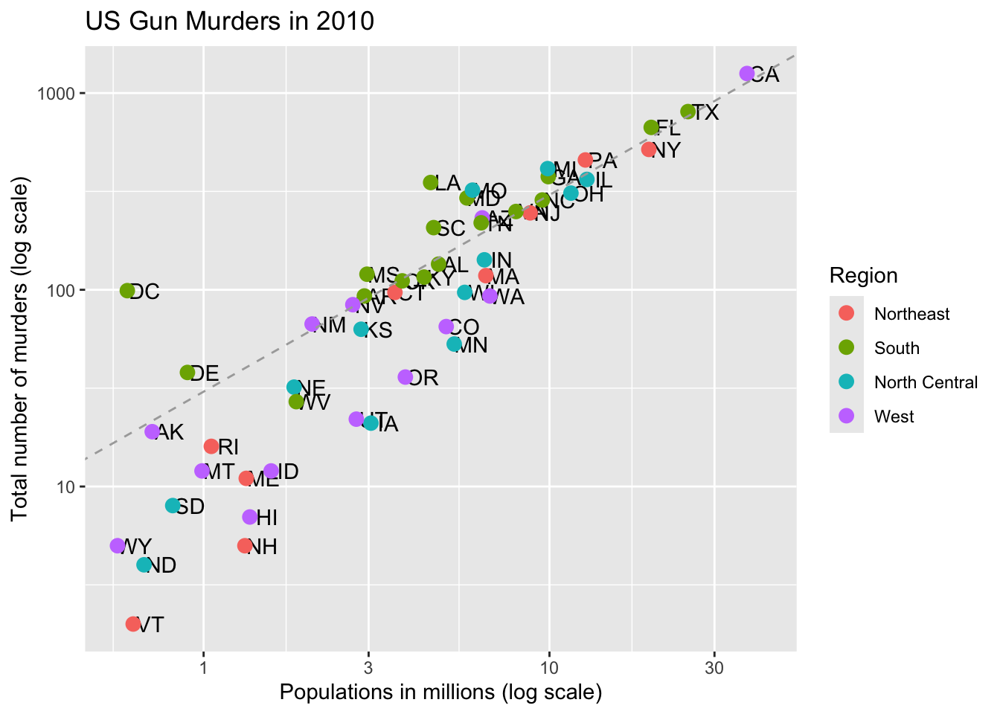
We are close!
Other adjustments
- To make the final adjustments we will save our current draft in
pand add layers.
p <- murders |> ggplot(aes(population/10^6, total, label = abb)) +
geom_text(nudge_x = 0.05) +
scale_x_log10() +
scale_y_log10() +
labs(x = "Populations in millions (log scale)",
y = "Total number of murders (log scale)",
title = "US Gun Murders in 2010",
color = "Region") +
geom_point(aes(col = region), size = 3) +
geom_abline(intercept = log10(r), lty = 2, color = "darkgrey")Add-on packages
- The dslabs package can define the look used in the textbook:
ds_theme_set()- Many other themes are added by the package ggthemes.
Add-on packages
ggthemes provides pre-designed themes.
library(ggthemes)
p + theme_economist()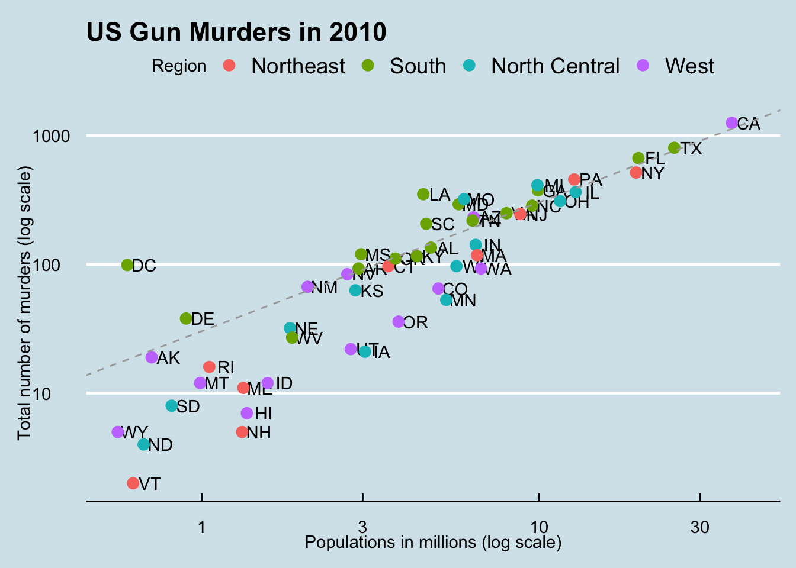
Add-on packages
Here is the FiveThirtyEight theme:
p + theme_fivethirtyeight()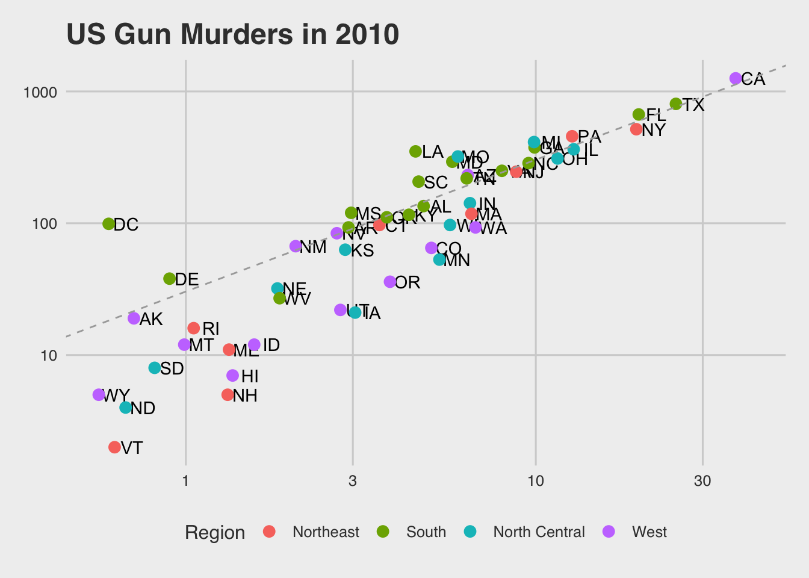
Add-on packages
If you want to ruin the plot use the excel theme:
p + theme_excel()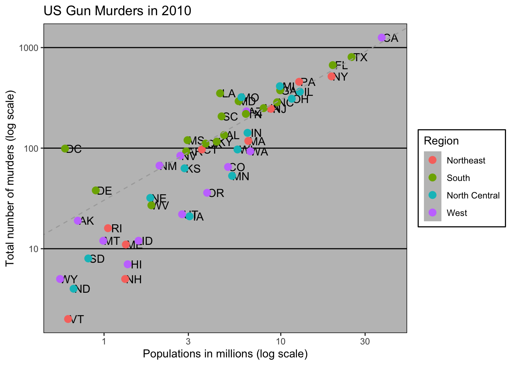
Add-on packages
ThemePark provides fun themes:
library(ThemePark)
p + theme_starwars()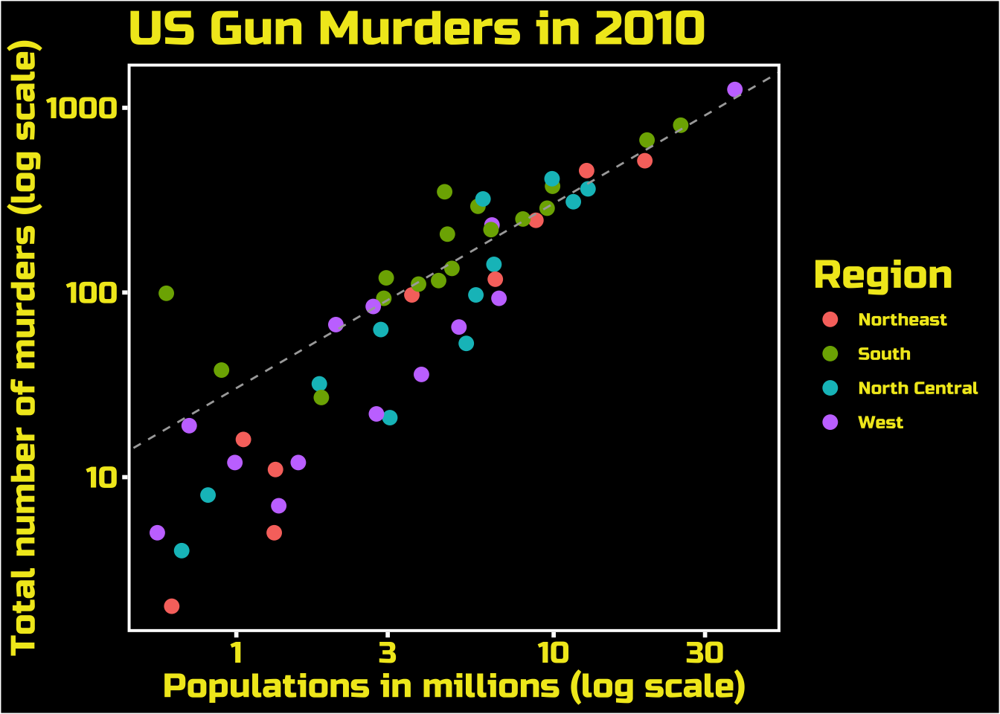
Add-on packages
This is a fan favorite:
p + theme_barbie()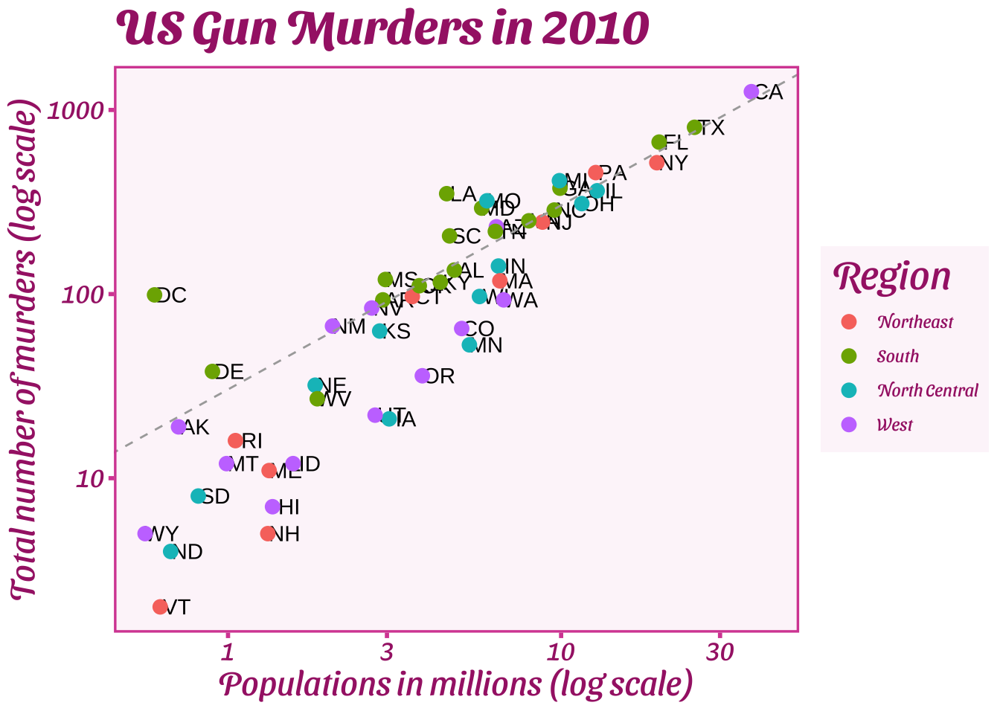
Add-on packages
To avoid the state abbreviations being on top of each other we can use the ggrepel package.
We change the layer
geom_text(nudge_x = 0.05)togeom_text_repel()
Putting it all together
library(ggthemes)
library(ggrepel)
r <- murders |>
summarize(rate = sum(total) / sum(population) * 10^6) |>
pull(rate)
murders |> ggplot(aes(population/10^6, total, label = abb)) +
geom_abline(intercept = log10(r), lty = 2, color = "darkgrey") +
geom_point(aes(col = region), size = 3) +
geom_text_repel() +
scale_x_log10() +
scale_y_log10() +
labs(x = "Populations in millions (log scale)",
y = "Total number of murders (log scale)",
title = "US Gun Murders in 2010",
color = "Region") +
theme_economist()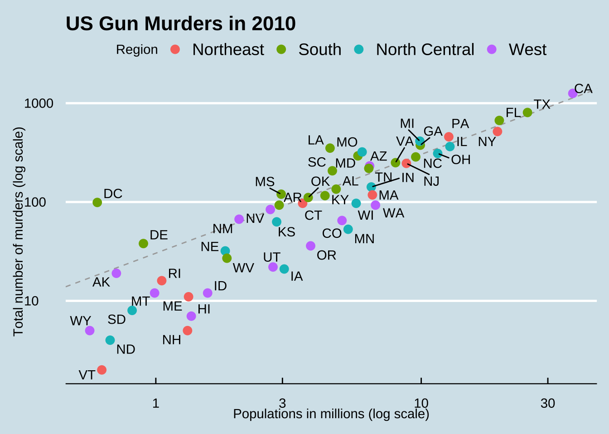
Grids of plots
We often want to put plots next to each other.
The gridExtra package permits us to do that:
library(gridExtra)
p1 <- murders |>
ggplot(aes(log10(population))) +
geom_histogram()
p2 <- murders |>
gplot(aes(log10(population), log10(total))) +
geom_point()
grid.arrange(p1, p2, ncol = 2)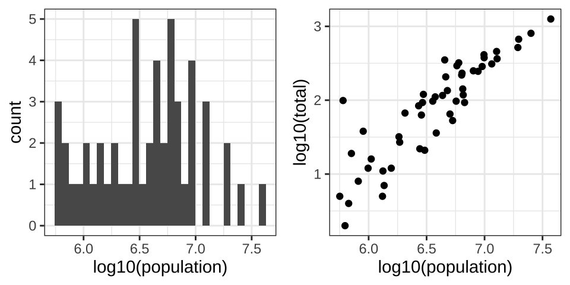
Grids of plots
There are several additional packages for combining ggplot2 plots into visually appealing layouts:**
cowplot: A versatile package designed for publication-quality plots, offering seamless integration with ggplot2.
ggpubr: Provides user-friendly functions for combining and annotating ggplot2 plots with minimal effort.
New packages frequently emerge. Explore beyond these options and stay curious—there might be new tools that suit your needs even better!